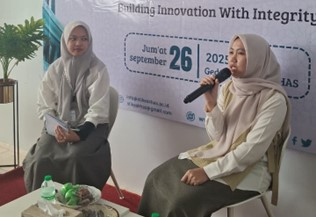

Himpunan Mahasiswa Farmasi (Himafarma) STIKes KHAS Kempek Cirebon sukses menyelenggarakan Pengenalan Kehidupan Kampus bagi Mahasiswa Baru (PKKMB) khusus Program Studi Farmasi pada Jum’at, 26 September 2025.
Pada hari Jum’at tanggal 26 September 2025, Himpunan mahasiswa farmasi (Himafarma) sekolah tinggi ilmu kesehatan (STIKes) KHAS Kempek Cirebon mengadakan pengenalan kehidupan kampus bagi mahasiswa baru ( PKKMB) prodi Farmasi. Himafarma STIKes KHAS Kempek berkolaborasi dengan Himpunan mahasiswa gisi (HIMAGI) STIKes KHAS Kempek dalam pembukaan dan penutupan acara PKKMB ini.
Tujuan Utama Kegiatan:
Adanya PKKMB prodi Farmasi ini diharapkan agar para mahasiswa baru prodi farmasi dapat lebih mudah beradaptasi dengan lingkungan STIKes KHAS Kempek khususnya di prodi Farmasi yang meliputi:
- Pengenalan lingkungan laboratorium dan alat-alat laboratorium.
- Penjelasan sistematika pengerjaan laporan praktikum.
- Perkenalan dengan jajaran dosen Prodi Farmasi.
Materi Akademik & Etika
Ketua Prodi Farmasi, Ibu Yusfia Urwatul Wutsqa, M. Sc. turut hadir dalam acara tersebut. Beliau memaparkan materi pengenalan sistem perkuliahan dan diskusi Sistem perkuliahan yang ada di STIKes KHAS Kempek. Banyak hal yang dapat di ambil pelajaran oleh mahasiswa baru dari beliau.

Dokumentasi: Penyerahan sertifikat kepada Ketua Prodi Farmasi, Ibu Yusfia Urwatul Wutsqa, M. Sc.
Selain sisi akademik, Ibu Apt. Nur Azizah Rohmatika, S.Farm. juga turut hadir dalam acara tersebut. Beliau memberikan edukasi tentang etika, akhlak, peluang karir Farmasi dan kebangganggaan menjadi mahasiswa farmasi. Dalam edukasinya, beliau memberikan semangat kepada mahasiswa baru agar semangat dan bangga menjadi mahasiswa Farmasi di STIKes KHAS Kempek.

Dokumentasi: Penyerahan sertifikat kepada Ketua Prodi Farmasi, Ibu Yusfia Urwatul Wutsqa, M. Sc.
Inspirasi dari Alumni
Dalam acara tersebut, Himafarma juga menghadirkan alumni dari Program studi S1 prodi Farmasi STIKes KHAS Kempek yaitu Iis Istiqoah, S. Farm. Beliau merupakan pegawai di rumah sehat baznas (RSB) Pegagan, Palimanan. Banyak hal yang beliau share kepada mahasiswa baru seperti awal beliau di STIKes, perjalanan beliau belajar, pengalaman di RSB, dan beberapa hal yang tentunya dapat memberikan wawasan dan semangat bagi mahasiswa baru.

Dokumentasi: Sesi sharing bersama alumni S1 Farmasi, Iis Istiqoah, S. Farm.
Acara tersebut di tutup dengan mini games dari paniti PKKMB prodi Faramsi dan pembagian hadiah. Patitia berharap, PKKMB tersebut dapat terus dilaksanakn pada periode periode selanjutnya.